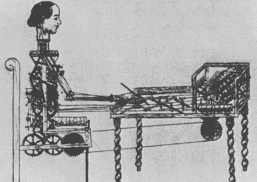

Toward a Theory of Architecture Machines
ByWhen a designer supplies a machine with step- by-step instructions for solving a specific prob- lem, the resulting solution is unquestionably at- tributed to the designer’s ingenuity and labors. As soon as the designer furnishes the machine with instructions for finding a method of solu- tion, the authorship of the results becomes am- biguous. Whenever a mechanism is equipped with a processor capable of finding a method of ending a method of solution, the authorship of the answer probably belongs to the machine.
If we extrapolate this argument, eventually the machine's creativity will be as separable from the designer's initiative as our designs and actions are from the pedagogy of our grandparents.
The Evolutionary Machine
This discussion is not about machines that necessarily can do architecture; it is a preface to machines that can learn about architecture and perhaps even learn about learning about architec- ture. Let us call such machines orcfiitecture mo- chines; the partnership of an architect with such a device is a dialogue between two intelligent systems—the man and the machine—which are capable of producing an evolutionary system.[1]
Certainly computers are formidable clerks. They perform well when told exactly how to do something and they can remove drudgery by do- ing the dull repetitious design tasks. Is that not enough? Why ask a machine to learn, to associate courses with goals, to be self-improving and to be ethical?
The answer is imbedded in the question. If a machine can be a self-improving evolutionary specie, it sports a better chance of making its computational and informational abilities rele- vant. Most computer-aided design studies are ir- relevant inasmuch as they only present more fashionable and faster (though rarely cheaper) ways of doing what designers already do. And, since what designers already do does not seem to work, we will get inbred modus operandi that could make bad architecture even more prolific. The general concern of machine-assisted architecture is twofold: First, architects cannot handle large scale problems, for they are too complex; second, architects ignore small scale problems, for they are too particular and individ- ual (and, to them, trivial]. As a result of both realities, “less than 5 percent of the housing built in the United States and less than 1 percent of the urban environment is exposed to the skills of the design professions.”3 In trying to combat these deficiencies, researchers are developing infor- mation systems, computer graphics and comput- ing services that liberate the designer and allow him more time to do that which he really loves. Such efforts would be meaningful only in a con- text where machines can learn to be adaptable and learn to be relevant. (And then these efforts might be unnecessary.) Ironically, an environ- mental humanism might only be attainable in cooperation with machines that have been thought to be inhuman devices — devices that can intelligently respond to the tiny, individual, con- stantly changing bits of information that reflect the identity of each urbanite as well as the coherence of the city. If this is true, then the first issue is: Can a machine deduce responses from a host of environmental data?
The Learning Machine
A 1943 theorem of McCulloch and Pitts states that a robot constructed with regenerative loops of a certain formal character is capable of deduc- ing any legitimate conclusion from a finite set of premises.’ One approach to such a faculty is to increase the probability of meaningfulness of the output (the design) generated from random or disorderly input (the criteria). Ross Ashby stated, “It has been often remarked that any random se- quence, if long enough, will contain all answers; nothing prevents a child from doodling: cos' X + sin' x = J .”' In the same spirit, to paraphrase the British Museum/chimpanzee argument, a group of monkeys, while randomly doodling, can draw plans, sections and elevations of all the great works of architecture and do this in a finite period of time. As the limiting case, we would have a tobuJ‹i ros‹i realized as a network of un- committed design components (or uncommitted primates). Unfortunately, in this process, our protagonists will have built Levittown, Lincoln Center and the New York Port Authority Towers. Surely some constraint and discrimination is necessary if the components are to converge on solutions with reasonable time. Components must assume some original commitment. As ex- amples, five particular subassemblies would be part of an architecture machine: 1) a heuristic mechanism, 2) a rote apparatus, 3) a conditioning device, 4) a reward selector and 5) a forgetting convenience...
1. This issue will be discussed at length in Nicholas Negroponte’s The A rchi tectu re Mochi ne, Cambridge: MIT Press, late 1969. The prepara- tion of the manuscript has been sponso red by Joint Center for Urban Studies of Harvard University and MIT: The reader should also reler to : Warren M. B rodey and Nilo Lindgren, “Human Enhancement Through Evolutionary Technology,” IEEE f peetrum, September 1967, page 87.